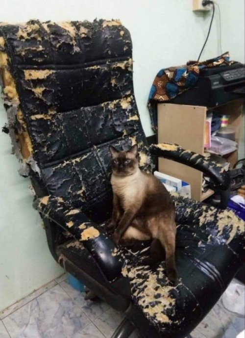

O retrocesso do Multiversus
Ola sou Thiago Mello Bertolo Silva, prazer em conhecer. e isto é um gato. se este é gato é seu, por favor, pegue o de volta, ele destruiu a minha cadeira.

Você por acaso ja teve uma experiência sobre um jogo, onde você está se divertindo com o que o jogo tem a oferecer, porem os desenvolvedores prometem que quando lançarem a versão oficial, todos os problemas irão desaparecer, as críticas serão ouvidas e "features" implementadas. O que eles precisam, é de tempo.
Então você espera. Espera sobre alguma notícia que eles podem contar. Alguma notícia sobre o progresso do jogo em seu estado atual. Alguma notícia sobre sequer o lançamento do jogo. Alguma notícia em geral. Até que finalmente, uma data de lançamento, com informações sobre os novos conteudos que estarão presentes no 1º dia.
Até você começar a notar que tem alguma coisa errada. Depois de explorar tudo o que o jogo tem a mostrar parar todos, seja os conteúdos, a como podemos acessar estes conteúdos, A "gameplay" do jogo, a monetização... tudo começa a clicar, e finalmente você percebe o que está acontecendo.
O seu jogo que estava esperando pra sair, está em um estado pior que a "beta"
Devastado, perplexo, estupefado, resolvi fazer o que cada um nesta situação faria. Criar um blog para reclamar sobre vários aspectos do jogo, onde ninguem ira ver, a não ser alguns alunos e um professor, em prol de conseguir ganhar a maior nota possivel parar um trabalho de um curso
Agora estou aqui para contar sobre a minha maior instatisfação deste semestre, logo depois do meu desespero de saber que eu tenho que finalizar este blog até domingo (Eu culpo eu do passado por isso). Confira os artigos que contam sobre um problema que gostaria de tratar sobre uma "feature" do jogo